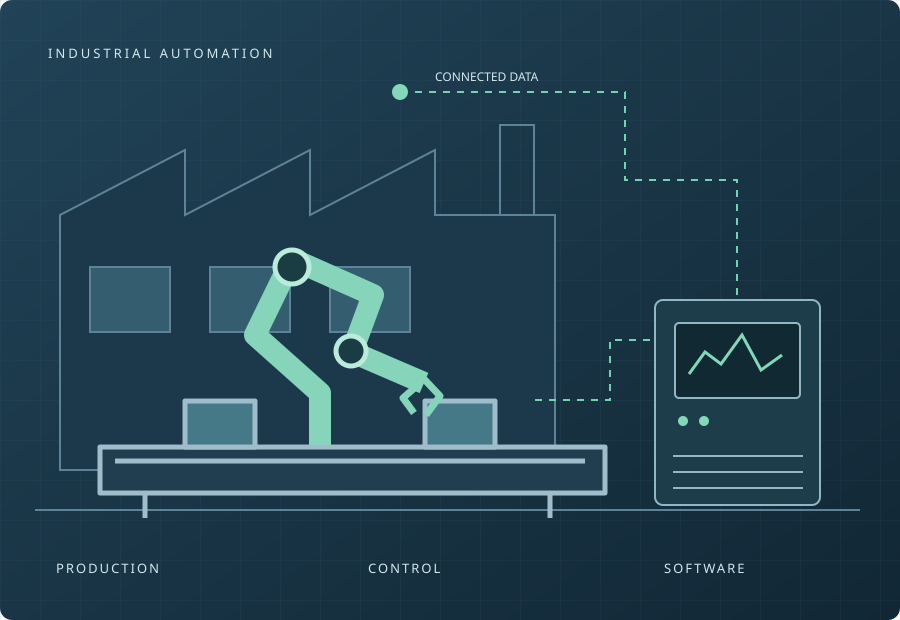

생산 설비와 제어
센서, 구동기와 PLC가 현장의 상태를 감지하고 생산 동작을 제어합니다.
JAYON STUDIO / INDUSTRIAL SOFTWARE
Software for the factory floor.
설비의 움직임을 데이터로 이해하고,
제어 시스템과 운영 소프트웨어 사이를 연결합니다.
JAYON STUDIO는 현장에서 활용할 수 있는 산업용 소프트웨어를 만듭니다.

INDUSTRIAL AUTOMATION SOLUTIONS
공장자동화는 장비 제어와 데이터 활용이 함께 움직일 때 완성됩니다.
서로 다른 시스템을 연결하고, 적용 전에 검증할 수 있는 기반을 제공합니다.
센서, 구동기와 PLC가 현장의 상태를 감지하고 생산 동작을 제어합니다.
통신 프로토콜이 다른 장비의 값을 소프트웨어가 활용할 수 있는 데이터로 연결합니다.
수집한 데이터를 운영 화면과 상위 시스템에 전달해 상태 확인과 업무 연계에 활용합니다.
장비가 준비되기 전 통신과 화면 동작을 시험하고, 반복 가능한 데이터로 연동 로직을 확인합니다. 실제 현장에서는 장비별 조건에 맞춰 최종 검증합니다.
OUR VISION
서로 다른 장비와 시스템 사이의 연결을 단순하게 만들고,
개발자가 현장의 문제 해결에 집중할 수 있도록 돕고자 합니다.
다양한 PLC 데이터를 공통 인터페이스로 다뤄 시스템 연계의 복잡함을 줄입니다.
실제 장비 연결 전 통신과 데이터 처리 흐름을 반복해서 시험할 수 있는 환경을 제공합니다.
현장의 요구에 맞춰 API와 스크립트로 기능을 더할 수 있는 소프트웨어를 지향합니다.
OUR PRODUCTS
PLC 데이터를 하나의 태그 시스템으로 수집하고 OPC UA, SDK와 C# 스크립트로 활용하는 산업 데이터 플랫폼.
JCore 알아보기 ↗실제 PLC 없이 메모리와 태그를 준비하고 클라이언트의 읽기·쓰기 동작을 확인하는 통신 테스트 도구.
PLC Simulator 알아보기 ↗